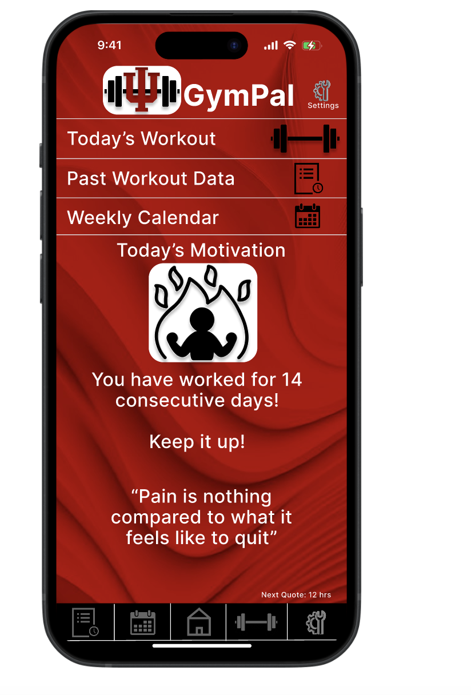

ParkSpotter
Real-time reporting tool for theme parks. Visitors report cleanliness or maintenance issues directly to staff via a live, interactive map. Increases accountability and enhances guest satisfaction.
More InfoExplore case studies and projects showcasing my experience with user research, prototyping, and human-centered design.
Real-time reporting tool for theme parks. Visitors report cleanliness or maintenance issues directly to staff via a live, interactive map. Increases accountability and enhances guest satisfaction.
More Info
An AI-powered fitness app tailored for IU students. Provides workout routines, form tutorials, and progress tracking for users of all fitness levels.
More Info